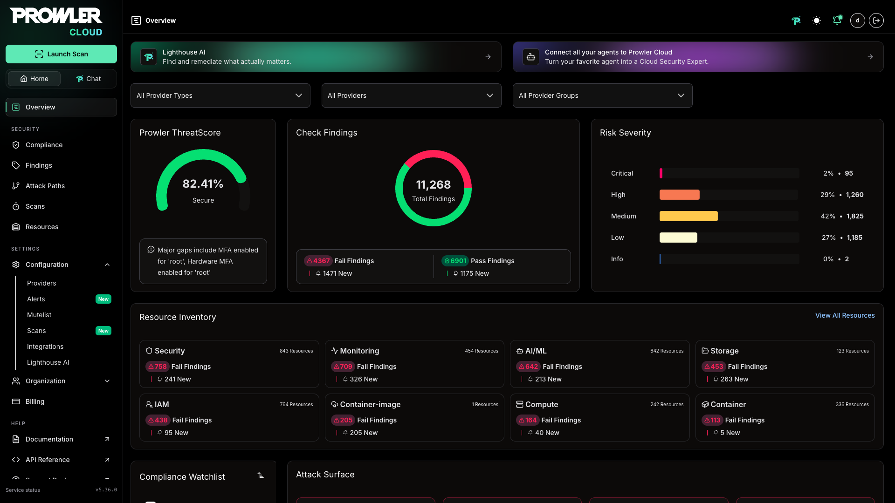
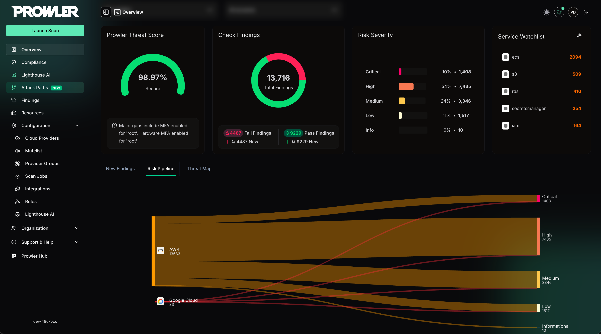

1-Аналог • GitHub 11k+ Stars
Тек Live Cloud аудиті
Prowler (Prowler Open Source Security)
Сілтемесі: github.com/prowler-cloud/prowler
prowler_overview_dashboard.png
Нақты скриншот

prowler_risk_pipeline.png
Тәуекелдер тақтасы

Артықшылықтары (+):
- AWS, Azure, GCP бұлттарын кешенді тексеруге арналған 300-ден аса ережелер жинағы.
- CIS AWS Foundations Benchmark стандарттарының толық сәйкестігі.
- Қауымдастық пен индустриядағы ең көп танылған де-факто стандарт.
Кемшіліктері (-):
- Shift-Left жоқ: Terraform кодын (.tf файлдарын) оқымайды, тек бұлтқа шығып қойған қателерді көреді.
- Drift Detection жоқ: Кодтан тыс консоль арқылы жасалған өзгерістерді таба алмайды.
- Қазақ тілі жоқ: Тек ағылшын тілінде, мемлекеттік секторға локализацияланбаған.
- Бағалау қарапайым: Тек орындалған чектердің пайызын көрсетеді, сыни қауіпті салмақтамайды.